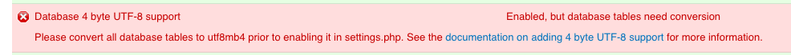

Migrate to ISLE Environment
Expectations: It may take at least 8 hours or more to read this documentation and complete this installation. Please proceed slowly.
This will help you migrate your existing production Islandora 7.x environment to an ISLE environment for easily maintaining Islandora. This documentation will help you identify and copy your institution's preexisting Islandora data, files, and themes (including your data volume, Drupal site(s) and theme(s), and commonly customized xml and xslt files) to your ISLE environment.
Please post questions to the public Islandora ISLE Google group, or subscribe to receive emails. The Glossary defines terms used in this documentation.
Assumptions / Prerequisites
-
You have already completed the Hardware Requirements, Software Dependencies for your host server, and Remote Server ISLE Installation.
-
Never ever share or post your .env files publicly. The .env and tomcat.env files ("Docker Environment files") are your primary resources for customizing your ISLE stack. These .env files contain passwords and usernames and must be treated with the utmost care.
-
You have disk space on - or mounted to - the host server large enough to store a full copy of your fedora data store.
-
You have sufficient storage available for the ISLE host server to accommodate a working copy of a production Islandora's associated configurations and data.
THIS SECTION IS IN DEVELOPMENT. PLEASE COME BACK SOON.
Migrate Only: Finding Usernames and Passwords
-
You have usernames and passwords for key parts of your current Islandora production environment which will be used for the migration. The next steps will walk you through finding this information.
- Login to your current Islandora production server. If your current production environment is located across multiple servers, you may need to check more than one server to find this information.
- To find your Drupal MySQL username, password, and database run the following command:
grep --include=filter-drupal.xml -rnw -e 'dbname.*user.*password.*"' / 2>/dev/null-
Example output:
connection server="localhost" port="3306" dbname="**islandora**" user="**drupalIslandora**" password="**Kjs8n5zQXfPNhZ9k**"- Username: copy the value from
user= - Password: copy the value from
password= - Database: copy the value from
dbname=
- Username: copy the value from
-
To find your Fedora MySQL username, password, and database run the following command:
grep --include=fedora.fcfg -rnw -e 'name="dbUsername"' -e 'name="dbPassword"' -e 'name="jdbcURL"' / 2>/dev/null- This command will print multiple lines. The first three lines are important but please save the rest (just in case).
- Example output:
param name="dbUsername" value="**fedoraDB**" param name="jdbcURL" value="jdbc:mysql://localhost/**fedora3**?useUnicode=true&characterEncoding=UTF-8&autoReconnect=true" param name="dbPassword" value="**zMgBM6hGwjCeEuPD**"- Username: Copy the value from
dbUsername value= - Password: Copy the value from
dbPassword value= - Database: Copy from the value
jdbcURL value=the database name which is directly between the "/" and the only "?"
- Username: Copy the value from
-
You know where your Fedora, Drupal (Islandora), and Solr data folders are located.
-
Login to your current Islandora production server. If your current production environment is located across multiple servers, you may need to check more than one server to located these data folders.
-
Finding your Fedora data folder (common locations include
/usr/local/fedora/dataor/usr/local/tomcat/fedora/data):Run a find command:
find / -type d -ipath '*fedora/data' -ls 2>/dev/null -
Finding your Drupal data folder (common location is under
/var/www/likely in a sub-folder; e.g., html, islandora, etc.)Run a grep command:
grep --include=index.php -rl -e 'Drupal' / 2>/dev/null -
Finding your Solr data folder (common location:
/usr/local/solr,/usr/local/tomcat/solr, or/usr/local/fedora/solr)Run a find command:
find / -type d -ipath '*solr/*/data' -ls 2>/dev/null -
Finding your FedoraGSearch data (i.e. transforms) folder
Run a find command:
find / -type d -ipath '*web-inf/classes/fgsconfigfinal' -ls 2>/dev/null
-
-
You have a SQL dump (export) of the current production site's Drupal database. Ensure that the contents of any
cachetable are not exported.-
Login to your current Islandora production server and navigate to your Drupal data folder.
Run the following command to generate a SQL dump of your Drupal database:
mysqldump -u {DRUPAL_USERNAME} -p {DRUPAL_DATABASE_NAME} | gzip > drupal.sql.gz
-
Finally also please note: Instructions from this guide and it's associated checklists call for you to COPY data from your current production Islandora environment to your ISLE Host Server or local computer. You work from these copies to build your ISLE environment. In some cases, you'll need to copy configurations down to your local computer (Local ISLE config laptop) and merge contents as directed. In other cases, due to the size of the data e.g. Fedora data you will copy directly to the ISLE Host server (Remote ISLE Host server). You will note where you have stored copies of files/data in a docker-compose.yml file. You will store your configured files in a git repository and use that to deploy to the ISLE host server.
Create Data Storage Directory
This area will be where all current Islandora production data is to be stored. This includes the Apache /var/www/html directory and the appropriate Fedora /usr/local/fedora/data subdirectories outlined below.
ON your ISLE Host server:
-
Create a directory named
yourdomain-data(where "yourdomain" is your server domain name)- Example:
project-name.yourdomain.edu-data
- Example:
-
Ensure that the islandora user has ownership and permissions to access this data.
-
chown -Rv islandora:islandora ~/project-name.yourdomain.edu-data -
Please note this path may change depending on how your ISLE host server storage area is setup.
-
Migration Export Checklist
-
In the
/opt/ISLE/yourdoman-configdirectory create a new sub-directory (you can call thiscurrent_prod_islandora_config) -
You will copy some files from your current Islandora Production server(s) into this directory following the Migration Export Checklist and you will copy some files and folders directly to your ISLE host server (in case the data involved is too large for your local workstation) as directed in the checklist.
- Noting most likely the Apache data (
/var/www/html) & Fedora data (/usr/local/fedora/data) will be moved directly to your ISLE host server storage area and your new ISLE config files will be built on your local machine in thecurrent_prod_islandora_configfolder you just created.
- Noting most likely the Apache data (
-
These copied files will be the source for edits and merges - just to be very clear, please don't work directly on these files in your currently running production Islandora system!
-
To be even more clear, after following the checklist, you should now have two nearly identical
/configsubdirectories- A. copied from the cloned ISLE repository and renamed with your domain e.g.
yourdomain-config or project-name.yourdomain.edu-config - B. copied from your currently running Islandora environment. e.g.
current_prod_islandora_config
- A. copied from the cloned ISLE repository and renamed with your domain e.g.
Migration Merge Checklist
The goal is to merge all site-specific data (domain names, variables, usernames, passwords, etc..) AND all site-specific customizations or settings from the files in directory B. into the matching files in directory A.
-
Compare the data and settings of the files found within directory B.
current_prod_islandora_config, and then merge, edit or copy as necessary with the templated settings found within the renamed directory A.yourdomain-configas guided in the Migration Merge Checklist. -
Customizations: (optional) Carefully compare the following most frequently customized files with the new, default versions found within your new ISLE config folder. Use a "Diff" tool (example: Beyond Compare to merge any desired customizations from your production Islandora files to persist within the new ISLE config folder of files:
-
Compare and merge the Solr files:
schema.xml - Compare and merge the Solr files:
solrconfig.xml - Compare and merge the Solr files:
stopwords - Compare and merge the Fedora GSearch Islandora Transform (XSLTs) folder of files:
islandora_transforms
Final Steps
-
Now that all the changes are made (be sure to save), ISLE should be ready to test. First you'll need to push these changes to your private code repository.
-
Open a terminal -
cdto the config directory you've been making the changes in... -
git statusthis will show you all the files that have been modified and ready to be added to your private repository along with handy paths for the next steps. -
git add /pathtoyourmodifiedfile(replace "pathtoyourmodifiedfile" with the path to your config directory) -
run these:
git add apachegit add fedoragit add mysqlgit add proxygit add solrgit add docker-compose.yml-
run
git statusagain - everything should be in green now as all modified files have been added - if anything's still red use git add and the path to add it -
then run
git commit -m "initial config commit"inside the double quotes is the commit message you can say whatever you want in this message - so for example if this is the config for your dev instance you could say that... -
run
git push origin masterthis will push all your changes to the repository further changes should be made on branches for different servers or to master branch for this same server
-
Clone Custom Configuration to Host Server
-
Open a terminal - ssh into your host server using the
islandorauser -
cdto/opt/ISLE/config/ -
because your customizations are in a private repository, you'll need to add this islandora user's
id_rsa.pubkey to the repository via the website. -
This key is found in
/home/islandora/.ssh/id_rsa.pub -
One can simply run
cat /home/islandora/.ssh/id_rsa.puband copy the output (ensure no whitespaces or extra returns) -
Go to the repository web site with a browser and locate your private repository.
- locate the ssh key entry location (in Bitbucket this is in Settings / Access Keys /
- add an ssh key w/ the label islandora host server paste in the key text and click Add Key
-
Back at your terminal command line, run
git clone URLpathtoyourremoteprivaterepo.git .(replacing "URLpathtoyourremoteprivaterepo" with the URL to the repository provided by the website) -
cdinto the newly cloned directory - this is a good time to check that the ISLE directory contains youryourdomain-configdirectory and that it reflects all the edits and customizations.
Spin up ISLE Containers
Review or Pull Down ISLE Docker Images
Please Note: You may have already done this in setting up the host server manually and / or with Ansible. However it is always a good idea to review and check using the first command below.
- Check if all ISLE images have been downloaded
-
docker image ls -
If yes, then proceed to Step 7
-
If not, then pull the latest images:
docker-compose pull
Spin Up the Proxy Container
=======
cd /opt/ISLE/yourdomain-configdocker-compose up -d proxy
Spin up the MySQL Container and Import Production Database(s)
cd /opt/ISLE/yourdomain-configdocker-compose up -d mysql
Two methods for connecting to the MySQL Database (GUI / CLI) pick one.
-
One may use SQL GUI clients e.g. Sequel Pro, Navicat, PHPMyAdmin etc. and import the production Drupal website database(s)
-
If the above not practical, one may connect to the MySQL container and run the following.
docker exec -it isle-mysql-institution bashto connect to the container- swap out
institutionfor the correct container name.
- swap out
- appropriate mysql commands here: consult MySQL documentation - https://dev.mysql.com/doc/refman/5.7/en/
2a. (optional) Only follow this if you have not first run drush cc all and then exported the MySQL databases or if you have not exported the MySQL databases excluding the contents of any table with cache in the name.
The following are STEPS, not literal commands to prepare your db for ISLE (doing this because we've found there are errors using exported db from production because of caches - causes problems - steps below help you remove this problem)
- import the production databases into the isle-mysql-institution container (with errors being ignored)
- truncate all tables that start with
cacheon the isle-mysql-institution container - export this new database to the
mysqldirectory on the isle host server - delete all tables (not the database itself) on the isle-mysql-institution container
- Re-import the new lighter database to the isle-mysql container
Spin up the Fedora Container and Start the Reindex Processes
Staying within /opt/ISLE/yourdomain-config
docker-compose up -d fedora
* optional check if fedora is running properly e.g. http://isle-prod-project.institution:8080/manager/html
docker exec -it isle-fedora-institution bash
- Follow the steps outlined in the Migration Reindex Process Guide
- Follow the steps outlined in the Reindex Fedora RI (1 of 3) section
- Follow the steps outlined in the Reindex SQL database (2 of 3) section
- Pause here before attempting the steps within the Reindex Solr (3 of 3) section.
- Move onto the next section in this guide,
Spin up apache container.
Spin up Apache Container
-
Staying within
/opt/ISLE/yourdomain-config -
docker-compose up -d apache -
docker exec -it isle-apache-institution bash -
Run the vset script
cd /var/www/html./vsets.sh
-
Edit .htaccess to enforce https
echo "SetEnvIf X-Forwarded-Proto https HTTPS=on" | tee -a /var/www/html/.htaccess
-
Check if the site is now is running properly by opening a web browser and navigating to your new ISLE domain e.g.
https://isle-prod-project.institution -
Please note while you may be able to see objects being displayed, metadata and search results will be empty until you run the last step in the Reindex process.
Troubleshooting Note Sites migrating from a version of Drupal prior to 7.50 may need to update their mysql tables to utf8mb4. On the new site, go to https://isle-prod-project.institution/admin/reports/status (you will need to be logged in as a Drupal Admin) and look for the following error:

Instructions for converting the Drupal mysql database are available on the Drupal website
Spin Up Solr Container and Complete the Reindex Processes
=======
- Staying within
/opt/ISLE/yourdomain-config docker-compose up -d solr-
(optional) check if solr is running properly e.g.
http://isle-prod-project.institution:8777/manager/html -
docker exec -it isle-fedora-institution bashNOTE FEDORA NOT SOLR! -
Follow the steps outlined in the Migration Reindex Process Guide
- Follow the steps outlined only in the Reindex Solr (3 of 3) section.
- (Ensure that Tomcat and Fedora are running.)
-
Check the results on the site using Islandora simple search or the appropriate search method.
Congratulations you should have successfully migrated your production Islandora site to ISLE!!